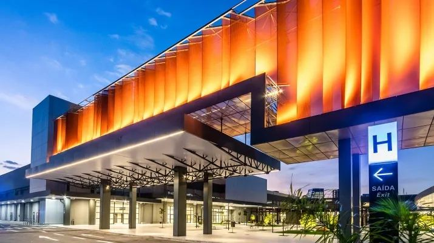

Conferences · AI
AIBC Malta 2027
- Dates
- –
- Location
- Ta' Qali, Malta
- Format
- In-person
- Category
- AI
- Industry
- AI
- Organiser
- AIBC World
- Official website
- https://aibc.world/
About
Dates are local to the host city (Central European Time, UTC+1 / UTC+2 in summer).
Topics: AI, regulation, gaming, EU AI Act.
No organiser attendance figure found on the official pages fetched 24 Nov 2026. Ranked by our estimated size tier 'medium' (10,000-30,000 attendees/visits), a judgement from format, venue and scale, not an official number.
Sources
Hotels
- Palais Le Brun — 4★ · 101 Old Bakery Street, Valletta, Malta · 8.6 km from the venue · Price on request
- Corinthia Palace Malta — 5★ · De Paule Avenue, San Anton BZN 9023, Malta · 2.7 km from the venue · Price on request
- The Xara Palace Relais & Châteaux — 5★ · Misrah il-Kunsill, Mdina MDN 1050, Malta · 1.6 km from the venue · Price on request
- Verdala Wellness Hotel — 5★ · Triq ir-Rghajja, Rabat RBT 2418, Malta · 2.2 km from the venue · Price on request
- AX The Victoria Hotel — 4★ · Gorg Borg Olivier Street, Sliema SLM 1807, Malta · 7.8 km from the venue · Price on request